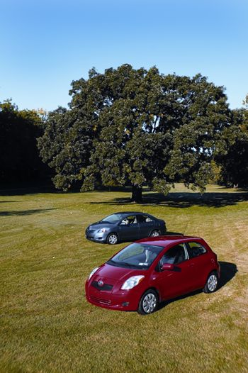

Affordable Cars, Fantastic Fuel Economy
Check out these 30 cars that get 30 mpg or better.
By John Rockhold and Todd Kaho
December 2006/January 2007
Fuel economy is back and better than ever. Among the new cars, there are improved perennial standouts, a growing number of hybrids and a crop of affordable, fuel-efficient small cars. Of course, much more progress needs to be made with energy-efficient vehicles and sustainable fuels, but fuel economy is finally in focus for automakers, and the 2006 and 2007 lineups show that we’re moving in the right direction.
Perhaps most exciting are three new cars that are small but practical, fun but not funky, and fuel-efficient without high price tags: the Honda Fit, the Nissan Versa and the Toyota Yaris. Their prices range from about $12,000 to $16,000; their miles per gallon stats reach into the high 30s. Then there are the longtime favorites for reliability and fuel economy - the Honda Civic and Toyota Corolla - which are as good as ever, if not better. Ditto for the best-selling hybrid Toyota Prius; in its wake automakers are improving hybrids and developing new models. Honda put new spark into its Civic Hybrid, and Toyota hybridized the best-selling family car in America, the Camry. Both have earned rave reviews.
The road ahead also looks bright: The 60-mpg Smart car that’s popular overseas will finally be available in the United States in 2008, perhaps even in an all-electric version; Honda is at work on an all-new hybrid that it says will be affordable and family-friendly; Mitsubishi says it will bring an all-electric car to the United States in the near future; many of the major automakers are working on plug-in hybrids; and Tesla Motors and other small start-up companies are proving that all-electric cars are not only possible, but feasible - if they can build them, you know the major automakers can.
We’ve also had more good news in the sharp decline of gas prices over the late summer and early fall of 2006, when average costs at the pump fell nearly 40 cents per gallon. But unfortunately we remain in an unsustainable equation over the long term, with rapidly rising demand pitted against rapidly declining supply. Tight supply and demand also creates a fragile foundation for gas prices over the short term - the slightest disruption could send prices back toward $3.00 a gallon and beyond. According to the U.S. Department of Energy (DOE), 2007 world oil prices will be at best only slightly less than in 2006. The DOE also projects 2007 U.S. gasoline prices will average $2.51.
Fuel-efficient Car Buyer’s Guide
To help you prepare for whatever the future brings, you’ll find information about the best of the best 2006 and 2007 vehicles in this chart. There are 30 models, and each has a combined fuel economy rating of at least 30 mpg. Other data listed in the chart includes price, annual fuel cost and scores that reflect the cars’ impacts on air pollution and global warming. And to give you a sense of how these cars handle and feel on the road, there are drive scores and comments from Todd Kaho, senior editor of Green Car Journal, who has the enviable job of driving green cars for a living. (See “Keys to the Data,” below, for explanations of each score, as well as resources for more information, including safety and reliability ratings.)
Choosing the “greenest” vehicle for your needs is an important - and empowering - decision. Whether it’s eschewing a car for a bike and/or public transportation; picking a small, gas-sipping car for your daily commute; or trading in the gas-gulping SUV for an efficient sedan or minivan that still has room for the whole family, going green can save you hundreds to thousands of dollars a year at the pump. You’ll also make a significant difference for the environment, and be a powerful force for positive change.
Toyota Yaris
What the heck is a Yaris? Literally, the name comes from a combination of Charis, the goddess of beauty and elegance in Greek mythology, and “ya,” a German word for yes. But most important, the Toyota Yaris is an affordable car with the best fuel economy of any non-hybrid, up to 40 miles per gallon. And with two models available for less than $13,500, the Yaris is far more affordable than any new hybrid. I drove a hatchback Yaris for a week and found it to be a remarkably fun and efficient car. If you lament the loss of the Geo Metro, the Yaris is your modern-day remedy, but also twice the car the Metro ever was.
The Yaris may be new to America, but it has been Toyota’s best-seller in Europe for several years. Not only is that a sign of the car’s popularity and reliability, but anyone considering a Yaris can be confident that Toyota has had plenty of time to work out any kinks. The two versions of the Yaris are a two-door hatchback and a four-door sedan (see image gallery). Both may look small, but they’re surprisingly comfortable inside.
The hatchback is particularly roomy in the front seats, with its high ceiling and aerodynamic windshield. Legroom can sometimes be a challenge for backseat passengers, but there’s ample shoulder and headroom; I regularly filled the Yaris with people and heard far more positive comments than complaints. The hatchback has a tiny trunk, but if you don’t have passengers you’ll have decent cargo space by using the back seat or even folding it down. There also are compartments, cup holders and cubby holes galore; the Yaris truly maximizes its space.
Another fun interior feature is the stereo, which can play mp3 CDs. Plus, there’s an auxiliary plug through which you can wire in your iPod or other portable music device. The only thing I didn’t like about the interior was having the speedometer in the center of the car rather than directly in front of me.
The sedan version is 18.7 inches longer than the hatchback, providing more space for passengers and cargo, and making it as roomy as traditional compact cars such as the Ford Focus.
Outside, the hatchback Yaris has a spunky design that turns heads; many asked if it’s a hybrid just because it looks so different from anything else out there. The sedan has a more conventional appearance, but isn’t boring by any means. Both come in unique and attractive colors.
The Yaris’ engine has punch. I had no trouble getting up to speed on highways, and I enjoyed darting around and away from SUVs. With its zip and nimble handling, the Yaris is an absolute blast to drive. I had so much fun that I sometimes forgot to drive with fuel economy in mind; nevertheless, I averaged 36 mpg and only needed gas once after more than 400 miles.
- John Rockhold
Honda Fit
When Honda moved the Civic up last year to become a mid-sized sedan, there was a gap at the entry-level end of their lineup. Enter the 2007 Fit, Honda’s all-new five-door (four plus a hatch) subcompact economy car. Powered by a 109-horsepower, 1.5-liter VTEC engine, the versatile little Fit is a sensible and fun solution at a time of unstable gas prices.
Though small on the outside, the Fit offers a surprising amount of room on the inside. The 60/40 split “magic seat” in the rear has impressive legroom and flips into a flat floor that can carry more than 41 cubic feet of cargo. As you might expect, handling is nimble, and the Fit feels most at home in an urban environment. Fuel capacity is just 10.8 gallons, so $20 will often top off the tank. But with fuel economy estimates of 33 mpg (31 mpg with the five-speed automatic) in the city and 38 mpg on the highway, you won’t make many trips to the gas station.
- Todd Kaho
Nissan Versa
Tall in the middle, with rounded abbreviated lines, the Nissan Versa is versatile and maximizes interior space. To differentiate it from its competitors, the Honda Fit and Toyota Yaris, Nissan is positioning the Versa as a high-content subcompact. This is no economy car - the Versa has numerous amenities, including an intelligent keyless entry system, Bluetooth hands-free phone and high-end audio systems.
The Versa has best-in-class power from its 122-horsepower, 1.8-liter engine, which can go with a six-speed manual, four-speed automatic or an automatic continuously variable transmission (CVT). That extra power, though, means the Versa isn’t as efficient as the Fit or Yaris; expect about 30 mpg or less in the city, mid-30s on the highway. But the 13.2 gallon fuel tank offers more than adequate range between fill-ups.
Several hundred pounds heavier than the Fit, the Versa is not quite as agile, but the overall ride and handling qualities are quite good for this class of vehicle. This is a comfortable car offering top-notch quality.
- Todd Kaho
Keys to the Data
Price: the manufacturer’s suggested retail price; pricing may vary based on your region.
Source: respective automakers and Kelley Blue Book
EPA mpg City: average estimate for city driving; actual mileage will vary with driving conditions and habits
EPA mpg Highway: average estimate for highway driving; actual mileage will vary with driving conditions and habits
Annual Fuel Cost: assumes 15,000 miles driven, ratio of 55% city, 45% highway; gasoline cost of $2.50/gallon, premium fuel $2.60/gallon, $1.45 compressed natural gas per equivalent gas gallon.
Source: www.fueleconomy.gov
Air Pollution Score: reflects the amount of pollutants from the vehicle that cause smog and health problems; scores range from zero to 10, with 10 the best.
Source: EPA Green Vehicle Guide
Greenhouse Gas Score: reflects the amount of carbon dioxide emissions (a greenhouse gas that causes global warming) from the vehicle; scores range from zero to 10, with 10 the best.
Source: EPA Green Vehicle Guide
Drive Score: reflects how it feels to drive and ride in the vehicle; scores range from zero to five steering wheels, with five the best.
Source: Todd Kaho, Green Car Journal senior editor
For More Information
Green car news and ratings:
www.greenercars.com
www.greencar.com
Hybrids:
www.hybridcars.com
www.hybridcenter.org
Reliability and safety ratings:
www.safercar.gov
www.iihs.org
www.jdpower.com/autos
Reviews, prices and buying tips:
www.edmunds.com
www.kbb.com
|
 MATTHEW T.STALLBAUMER Front: “Absolutely Red” Toyota Yaris hatchback; 34/39 mpg for $12,570. Back: “Pacific Blue Metallic” Yaris sedan; 34/39 mpg for $13,270. |
 TOYOTA 2007 TOYOTA YARIS; Styles Sedan, Hatchback; Price $13,270, $12,570; MPG City/Hwy. 34/39; Annual Fuel Cost $1,042; Air Pollution Score 6; Greenhouse Gas Score 9; Drive Score 5. |
HONDA 2007 HONDA FIT; Price $15,245; MPG City/Hwy. 31/38; Annual Fuel Cost $1,103; Air Pollution Score 6; Greenhouse Gas Score 8; Drive Score 5. |
|
NISSAN 2007 NISSAN VERSA; Price $16,065; MPG City/Hwy. 30/36; Annual Fuel Cost $1,172; Air Pollution Score 6; Greenhouse Gas Score 8; Drive Score 4. |
TOYOTA 2007 TOYOTA PRIUS; Price $22,795; MPG City/Hwy. 60/51; Annual Fuel Cost $682; Air Pollution Score 8; Greenhouse Gas Score 10; Drive Score 5. |
 HONDA 2007 HONDA CIVIC GX; Fuel Natural Gas, refill at home with the Phill device; Price $24,590; MPG City/Hwy. 28/39; Annual Fuel Cost $680; Air Pollution Score 9.5; Greenhouse Gas Score 9; Drive Score 5. |
|
HONDA 2006 HONDA INSIGHT; Price $22,125; MPG City/Hwy. 57/56; Annual Fuel Cost $670; Air Pollution Score 6; Greenhouse Gas Score 10; Drive Score 4. |
FORD 2007 FORD FOCUS SE; Price $15,365; MPG City/Hwy. 27/37; Annual Fuel Cost $1,210; Air Pollution Score 7; Greenhouse Gas Score 8; Drive Score 4. |
MAZDA 2007 MAZDA 3 i SPORT; Price $14,355; MPG City/Hwy. 28/35; Annual Fuel Cost $1,210; Air Pollution Score 6; Greenhouse Gas Score 8; Drive Score 5. |
 CHEVROLET 2007 CHEVY AVEO5 LS; Price $12,515; MPG City/Hwy. 27/37; Annual Fuel Cost $1,250; Air Pollution Score 7; Greenhouse Gas Score 8; Drive Score 2. |
|
|